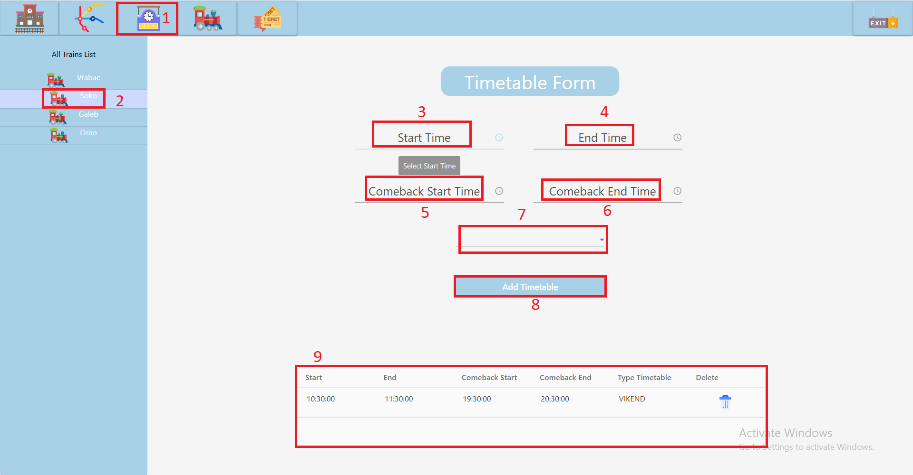

Prikaz stranice za Manipulaciju Redovima Voznje:

1. Klikom na ikonicu reda voznje se otvara Timetable page.
2. Dvoklikom na ikonicu voza se otvara prikaz redova voznje za pojedinacni voz.
3. Odabir satnice polaska voza u Timepicker-u.
4. Odabir satnice dolaska voza u Timepicker-u.
5. Odabir satnice povratka voza u Timepicker-u.
6. Odabir satnice povratka voza u Timepicker-u.
7. Odabir tipa reda voznje ( SVAKI_DAN/RADNI_DAN/VIKEND ).
8. Dodavanje novog reda voznje.
9. Prikaz svih redova voznje u tabeli za dati voz.